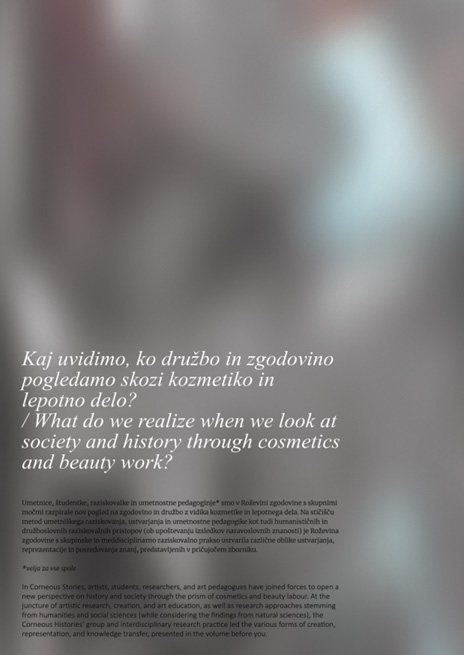
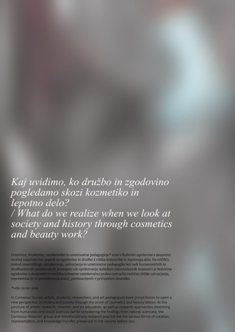
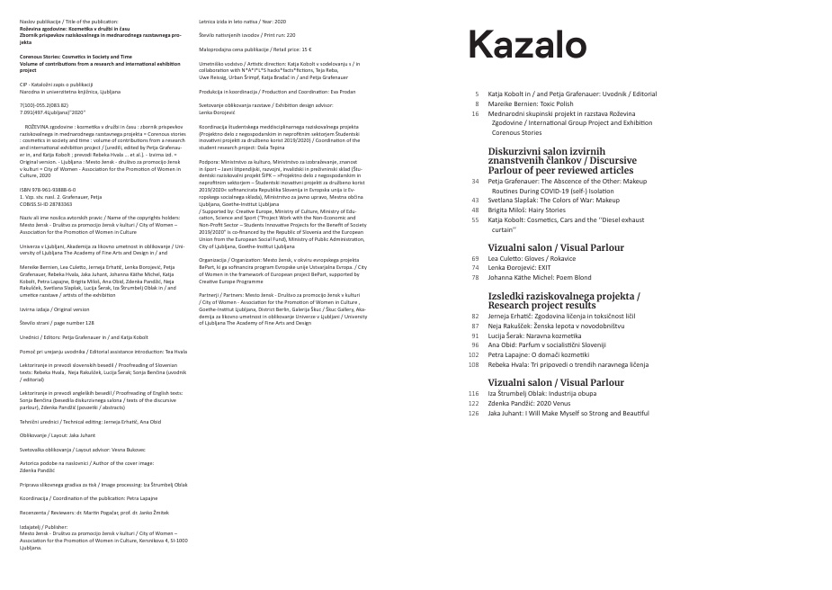
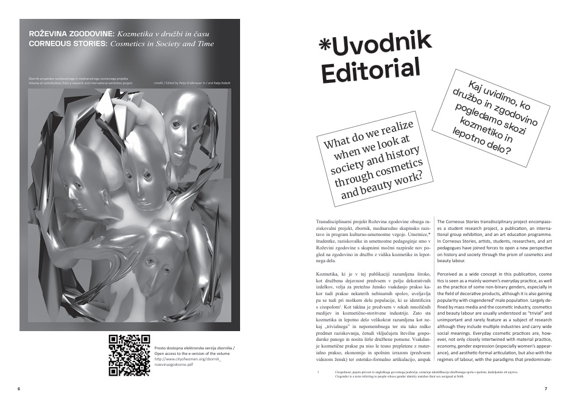
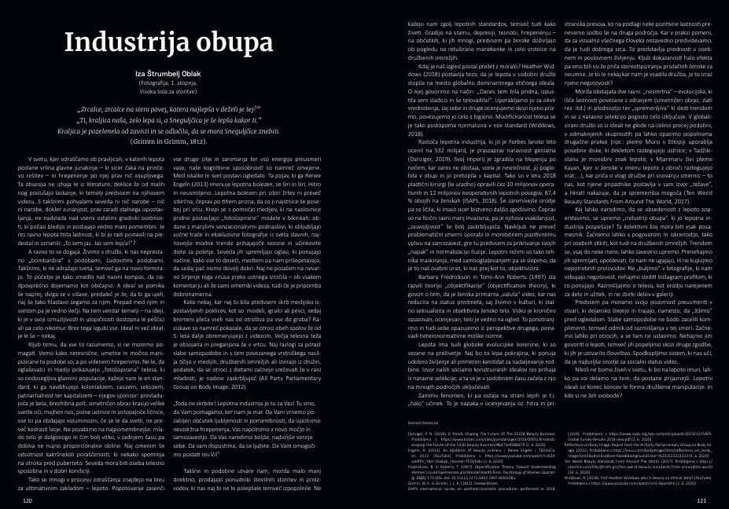
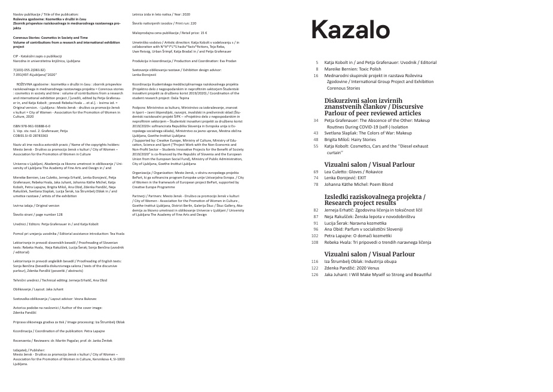
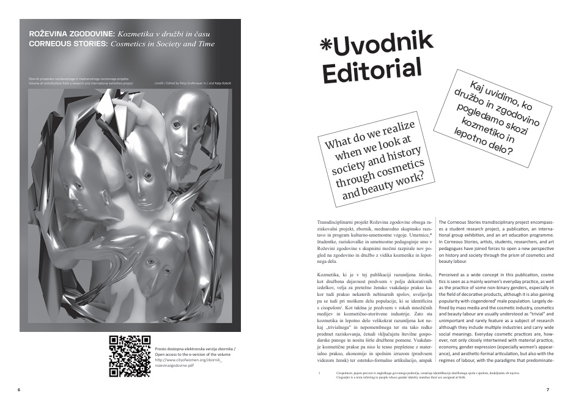
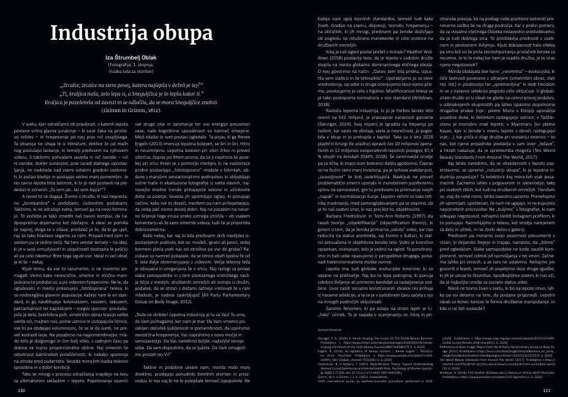

Zbornik Roževina zgodovine: Kozmetika v družbi in času
#graphicDesign #layout #magazine
Zbornik je nastal za meddisciplirani, mednarodni in medgeneracijski umetniško-raziskovalni projekt Roževina zgodovine, ki razgrne pogled na zgodovino skozi vizuro roževine in razkriva povezave med režimi dela, spoli, družbenimi razredi, migracijami, različnimi identitetami in njihovimi estetskimi kodiranji ter med kemično, filmsko, strojno, avto in vojno industrijo, prisilnim delom ali celo rasizmom do določenih družbenih skupin. Projekt ob tem naslavlja vprašanje toskičnosti in fitomedicine ter vlogo podobe žensk v obdobju hladne vojne in danes.
organizacija: Mesto žensk
podoba na naslovnici: Zdenka Pandžić
 

 




